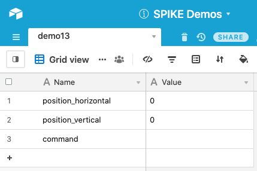
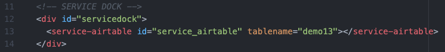
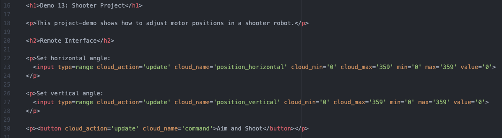
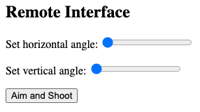
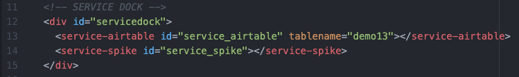
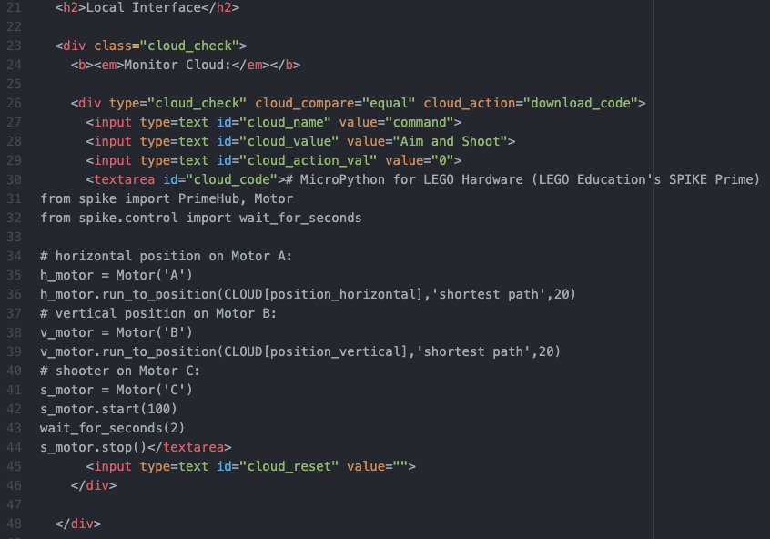
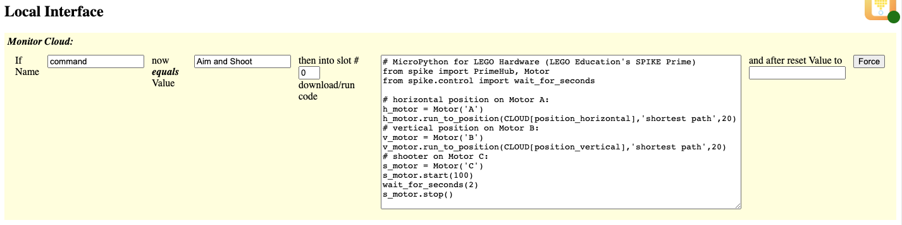
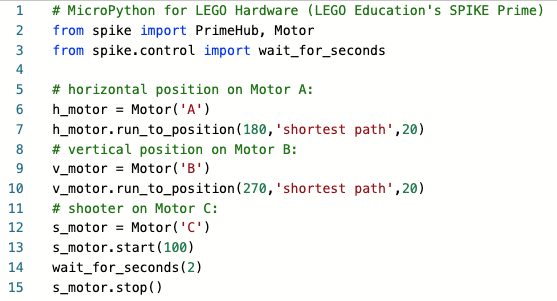

This project-demo shows how to adjust motor positions in a shooter robot.
Be sure to view the overall Documentation for configuring the cloud storage (API key, Base ID, etc) and for more information on how the entire system works.
This is the same setup as (1) Range Slider and (2) Simple Button demos. The "Name" column has an entries for "position_horizontal" and "position_vertical" (controlled by two range sliders) and a "command" that will be set to "Aim and Shoot" when the button is pushed.

Service Dock
The remote page has the Airtable Service Dock element. Make sure to update the tablename attribute to match your table name.
Remote Interface
The interface is two range sliders and a button.
The range sliders limit the angle from 0-degrees to 359-degrees, as specified by the SPIKE Prime API.
This is what the interface will look like on the Remote Page:

Service Dock
The local page has both the Airtable Service Dock element (make sure to update the tablename attribute to match your table name). There is also a single SPIKE Prime Service Dock element.
Local Interface
The local page is only monitoring the command value. When activated, it'll download and run the code (replacing "CLOUD[position_horizontal]" and "CLOUD[position_vertical]" with the respective values stored in Airtable.
The reset clears the command value in the cloud, so that the user can activate it again from the remote interface.
This is how the interface will look on the Local Page:
Note: to develop the code I used CodingRooms to write the code, using test values for the motor positions. Then when I moved the code from CodingRooms over to my webpage, I then replaced the test values with the "CLOUD[position_horizontal]" and "CLOUD[position_vertical]" values to be replaced.
